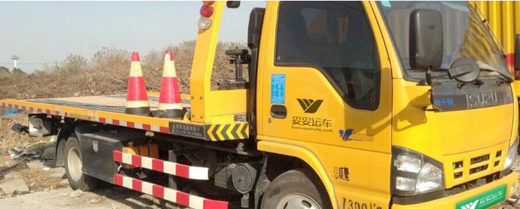
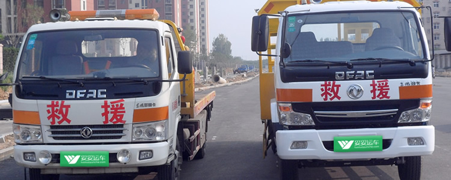

妥妥运车总公司北京信义安达物流有限公司成立于2012年，总部位于北京，是一家专业为商品车提供托运业务的物流公司。轿运物流中提车送车都会用到小拖板救援车，我公司可为用户提供短途小拖板托运业务。
2002年1月10日公安部、卫生部联合下发了《关于建立交通事故快速抢救机制的通知》,明确要求各地建立交通事故快速抢救机制，实现“110”、“120”和“122”急救信息联动和反馈制度，切实提高交通事故现场急救能力。部分省、直辖市也设立了道路交通救援委员会，并且在县市成立了相应的委员会，指导其交通事故紧急救援工作。
目前汽车救援市场正逐步走向规范化轨道，从零散无序管理走向集中网络管理，从客户实施走向服务客户，从闭塞走向开放。随着信息化时代的到来，车主获得救援服务也越来越容易。
首先，伴着市场需求专业的救援服务管理公司应运而生，它将汽车生产厂商、汽车经销商、专业的救援实施机构以及客户整合在一起，形成了以车辆为中心载体，以服务为导向，以解决客户燃眉之急为宗旨，为客户提供规范化、专业化、法制化、人性化和快捷化的服务。
第三，针对广大的非网络内的零散车主，妥妥运车作为非专门的救援小组逐步脱离交车托运业务，开始成立公司独立运营。

